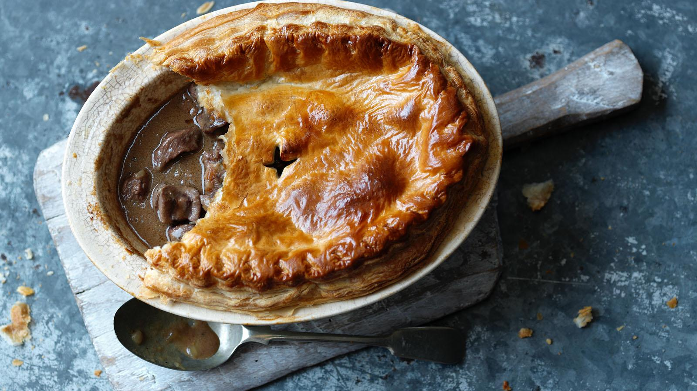

A classic hearty dish, bound to warm you on those cold evenings

Ingredients
Base
300g puff pastry
1 egg and 1 extra yolk beaten together
Filling
2 tbsp Vegtable Oil
2 Medium Onions, Diced
700g Braising Steak, Diced
200g Lamb Kideny, Diced
40g Plain Flour
850ml Beef Stock
Salt and Pepper
Dash of Worcestershire Sauce
Directions
Preheat the oven to 220C/425F/Gas 7
Heat the vegetable oil in a large frying pan, and brown the beef all over. (You may need to do this in batches.) Set aside, then brown the kidneys on both sides in the same pan. Add the onions and cook for 3-4 minutes.
Return the beef to the pan, sprinkle flour over and coat the meat and onions
Add the stock to the pan, stir well and bring to the boil.
Turn the heat down and simmer for 1½ hours without a lid. If the liquid evaporates too much, add more stock.
Remove from the heat. Add salt, pepper and Worcestershire sauce and allow to cool completely. Place the cooked meat mixture into a pie dish.
Roll out the pastry to 5mm/¼in thick and 5cm/2in larger than the dish you are using.
Using a rolling pin, lift the pastry and place it over the top of the pie dish. Trim and crimp the edges with your fingers and thumb.
Brush the surface with the beaten egg mixture and bake for 30-40 minutes until golden-brown and puffed.
Serve with creamy mash and steamed vegetables to soak up the gravy.